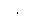

Beeper Control
Normally, the function generator will emit a tone when an error is generated from the front-panel or over the remote interface. You may want to disable the front-panel beeper for certain applications.· The beeper state is stored in non-volatile memory and does not change when power has been off or after a remote interface reset. When shipped from the factory, the beeper is enabled.· Turning off the beeper does not disable the key click generated when you press a front-panel key or turn the knob.· Front-Panel Operation: Pressand then select the Beep softkey from the "System" menu.· Remote Interface Operation:
SYSTem:BEEPer Issue a single beep immediately
SYSTem:BEEPer:STATe {OFF|ON} Disable/enable beeper